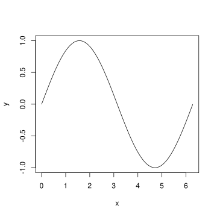
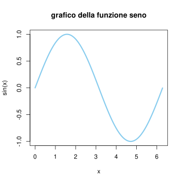
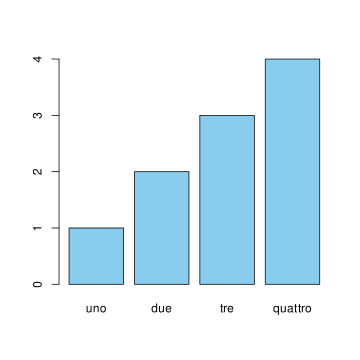
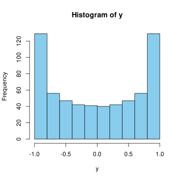

3+4*(1+2)[1] 152^2[1] 42**2[1] 4sqrt(2)[1] 1.4142142**(1/2)[1] 1.414214pi[1] 3.141593sin(pi)[1] 1.224647e-16exp( log (2) )[1] 2log(0)[1] -Inf0/1[1] 01/0[1] Inf0/0[1] NaNIn questa appendice diamo qualche informazione introduttiva su R ed RStudio (a partire da come installarli nel proprio dispositivo).
R è un linguaggio per il calcolo statistico. È multipiattaforma, gratuito e aperto (open-source). Dispone di una comunità molto attiva, molte estensioni (librerie) sono facilmente reperibili e ben curate – pur non essendovi una garanzia commerciale.
Perché il nome R? è un’evoluzione open-source di un linguaggio per statistica chiamato S.
Per installare R sul proprio computer, si seguano le istruzioni per scaricare una distribuzione pre-compilate alla pagina https://cran.rstudio.com/.
Oltre ad R, è fortemente consigliato installare inoltre RStudio che fornisce una interfaccia grafica ed un editor di testo con funzioni avanzate (precisamente è un Integrated Development Enviroment, IDE), che ne agevola notevolmente l’uso. La versione Desktop di RStudio è open-source e liberamente scaricabile seguendo le istruzioni alla pagina https://rstudio.com/products/rstudio/download/#download.
All’avvio di Rstudio appare un terminale (in basso a sinistra) in cui possiamo inserire del testo. Questo ci permette di dialogare direttamente con una sessione di R.
Possiamo scrivere un file contenente comandi da eseguire cliccando su File->New File->R script Questo produce uno script (una lista di comandi da eseguire).
In alternativa, possiamo anche procedere con File->New File->R notebook, che produce un file di testo contenente blocchi di comandi eseguibili, esportabile in svariati formati, come HTML o PDF. Questo è molto utile se dovete preparare un report con l’analisi di alcuni dati (oppure documenti più sofisticati, ad esempio questi appunti sono tutti scritti usando R bookdown, una evoluzione di R notebook per scrivere libri).
Per gestire progetti più complessi, contenenti diversi files, conviene andare alla voce File->New Project…
In generale si può ottenere informazioni su un comando digitandolo preceduto dal punto interrogativo. Ad esempio ?exp fornisce indicazioni sul comando exp(). Dal menù Help si può accedere a svariate risorse, tutorial e documentazione per conoscere comandi di base e più avanzati.
Il primo uso che possiamo fare di R è una calcolatrice in cui molte funzioni e costanti matematiche sono già disponibili.
3+4*(1+2)[1] 152^2[1] 42**2[1] 4sqrt(2)[1] 1.4142142**(1/2)[1] 1.414214pi[1] 3.141593sin(pi)[1] 1.224647e-16exp( log (2) )[1] 2log(0)[1] -Inf0/1[1] 01/0[1] Inf0/0[1] NaNIl linguaggio permette di introdurre oggetti (numeri, vettori, liste, funzioni…) e li mantiene in memoria fino alla chiusura di una sessione, a meno che non vengano esplicitamente rimossi (questo può essere utile per le prestazioni nel caso si usi troppa memoria).
Per vedere quali oggetti sono attualmente disponibili nell’ambiente, usiamo il comando ls() oppure nella sezione in alto a destra, clicchiamo su Environment.
Possiamo definire oggetti con il nome che preferiamo con i comandi = oppure <- (in R è buona pratica usare il secondo, ma il simbolo di uguaglianza è comune a molti altri linguaggi). Definiamo ad esempio un oggetto numerico \(X\) assegnando il valore 3:
X = 3oppure equivalentemente possiamo anche digitare X = 3. Per accedere al valore, basta dare il suo nome come comando
X[1] 3Osserviamo che se introduciamo una copia \(Y\) di \(X\) e poi modifichiamo il valore di \(X\), \(Y\) non cambia.
Y = X
X = 4
Y[1] 3Le operazioni tra oggetti (numerici) sono abbastanza naturali:
x0 = 1
x1 = 5
x2 = 7
somma = x0+x1+x2
somma[1] 13prodotto = x0 * x1 * x2
prodotto[1] 35Ci sono diversi tipi di oggetti, per conoscerne il tipo (la classe) il comando è class(), con il nome dell’oggetto tra le parentesi. Ad esempio,
class(X)[1] "numeric"Una classe di oggetti utile sono i LOGICAL (valori TRUE o FALSE).
class(TRUE)[1] "logical"Le operazioni Booleane sono & (and), | (or), ! (not).
TRUE & FALSE[1] FALSETRUE | FALSE[1] TRUE!TRUE[1] FALSEPossiamo inoltre confrontare due oggetti numerici usando == per verificare se coincidono
1 == 1 [1] TRUE1 >= 2[1] FALSE1 != 2[1] TRUEUn`altra classe di oggetti sono i CHARACTER, ossia stringhe di caratteri evidenziate dalla presenza delle virgolette.
X = 'hello world'
print('hello world')[1] "hello world"I dati raccolti sperimentalmente spesso sono sequenze di osservazioni (ad esempio corrispondenti a diversi istanti nel tempo) che possiamo rappresentare come vettori. Per costruire un vettore usiamo la funzione di concatenazione c().
vettore = c(1,2,3)
vettore[1] 1 2 3In realtà R non distingue tra vettore e scalare. Questo è utile ad esempio per le operazioni matematiche che vengono eseguite su ciancun elemento.
vettore * 2[1] 2 4 6vettore + vettore[1] 2 4 6vettore * vettore[1] 1 4 9exp( vettore )[1] 2.718282 7.389056 20.085537Attenzione però quando operiamo con vettori di lunghezze diverse:
vettore0 = c(1,2,3,4)
vettore0[1] 1 2 3 4vettore1= c(1,2)
vettore1[1] 1 2vettore0 + vettore1[1] 2 4 4 6vettore0*vettore1[1] 1 4 3 8Possiamo selezionare gli elementi di un vettore specificandone la posizione tra parentesi quadre [].
vettore = c(5,3,6,18,-1)
vettore[1][1] 5vettore[2][1] 3Attenzione: diversamente da altri linguaggi, R conta le posizioni a partire da \(1\), non da \(0\).
Possiamo anche inserire un vettore all’interno delle parentesi quadre per selezionare un sottovettore del vettore iniziale. Oppure inserire un vettore di oggetti LOGICAL, in tal caso si seleziona il sottovettore corrispondente alle componenti TRUE.
vettore[c(1,2,5)][1] 5 3 -1vettore >= 5[1] TRUE FALSE TRUE TRUE FALSEvettore[ vettore >= 5][1] 5 6 181:4[1] 1 2 3 4vettore[1:4][1] 5 3 6 18Per creare un vettore di numeri reali equispaziati usiamo il comando seq().
x = seq(-1, 1, by=0.1)
x [1] -1.0 -0.9 -0.8 -0.7 -0.6 -0.5 -0.4 -0.3 -0.2 -0.1 0.0 0.1 0.2 0.3 0.4
[16] 0.5 0.6 0.7 0.8 0.9 1.0Il comando plot() è il comando di base per rappresentare grafici in due dimensioni. Usiamolo ad esempio per tracciare un grafico della funzione \(\sin(x)\) nell’intervallo \([0, 2\pi]\).
deltax=0.01
x = seq(0,2*pi, by=deltax)
y = sin(x)
plot(x,y, type='l')
Possiamo aggiungiamo delle etichette agli assi e cambiare il colore al grafico, ad esempio
plot(x, y, type='l', xlab='x', ylab='sin(x)', col=miei_colori[1], lwd=3, main="grafico della funzione seno")
Per rappresentare grafici a barre il comando è barplot():
barplot( 1:4, col=miei_colori[1], names.arg = c("uno", "due", "tre", "quattro"))
per rappresentare istogrammi (ossia diagrammi a barre delle frequenze in cui un insieme di dati assume valori in determinati intervalli), il comando è hist():
hist(y, col=miei_colori[1])
Uno dei punti di forza di R è l’ampia disponibilità di pacchetti (o librerie) che contengono svariate funzioni pronte all’uso per l’analisi dei dati, la rappresentazione grafica e la statistica. Faremo uso di qualche pacchetto anche nel corso. Il comando di base per installare un pacchetto (assicurarsi di essere connessi ad Internet) è install.packages() dove bisogna specificare tra virgolette il nome del pacchetto che si vuole installare. Ad esempio, faremo uso di forecast, perciò si può installarlo digitando sulla console di R install.packages('forecast').
Per caricare in una sessione di R un pacchetto e quindi poter accedere a tutte le funzioni che contiene, il comando è library() in cui di nuovo bisogna specificare nelle parentesi il nome del pacchetto di interesse. Perciò per poter accedere alle funzioni di forecast basterà digitare, dopo averlo installato correttamente, il comando library(forecast). Non è necessario installare ogni volta il pacchetto, mentre in ogni sessione di R vanno caricati ogni volta (a meno di non riprendere una sessione già salvata).
Se si vuole accedere solo ad una funzione da un pacchetto installato (ma non necessariamente caricato con library()), basta digitare il nome del pacchetto, due volte due punti, ::, e poi il nome della funzione. Ad esempio, per usare la funzione Acf() dal pacchetto forecast (supponendo che sia installato), basta digitare forecast::Acf().
Un elenco dei pacchetti disponibili è mantenuto sul sito CRAN.
Le funzioni descritte sopra sono sufficienti per un uso di base, ma per un uso più efficiente dei pacchetti e in particolare la gestione delle interdipendenze (una funzione può avere bisogno di altre funzioni definite in altri pacchetti ecc.), consigliamo il tool pacman. Per installarlo basta dare il comando install.packages('pacman').
La gestione dell’input e dell’output (ad esempio di previsioni, stime ecc.) in R può essere un po’ noiosa, perché formati di file diversi (testo semplice, Excel, ecc.) richiedono comandi diversi. Tuttavia, per un uso di base, si può installare il pacchetto rio. Consigliamo di usare pacman come strumento per l’installazione. Digitare quindi install.packages('pacman') se pacman non è già installato. Successivamente, basta digitare pacman::p_install('rio') per installarlo e pacman::p_load('rio') per caricarlo.
Una volta caricato, i comandi principali sono import() ed export() rispettivamente per caricare da un file e salvare dei dati su un file. È importante specificare l’estensione del file (si basa su quello per determinare il tipo di file).
Non tutti i formati sono supportati di base (in particolare gli Excel non lo sono), si veda la descrizione a questa pagina (bisogna usare il comando install_formats())
# Carichiamo rio
library('rio')
# Esportiamo il dataset Iris come un file .csv (comma separated value), ossia un file di testo semplice in cui le colonne sono separate da virgola
export(iris, "iris.csv")
# Nella cartella di lavoro dovrebbe essere presente il file iris.csv. Per importare basta usare il comando import. Vediamo ad esempio sullo stesso file appena creato
iris_importato = import( "iris.csv")
# Riconosciamo il solito dataset Iris
head(iris_importato) Sepal.Length Sepal.Width Petal.Length Petal.Width Species
1 5.1 3.5 1.4 0.2 setosa
2 4.9 3.0 1.4 0.2 setosa
3 4.7 3.2 1.3 0.2 setosa
4 4.6 3.1 1.5 0.2 setosa
5 5.0 3.6 1.4 0.2 setosa
6 5.4 3.9 1.7 0.4 setosaApprossimare numericamente l’integrale di \(\sin(x)\) nell’intervallo \([1/2,1]\). Può essere utile il comando sum().
Perché il grafico prodotto dal comando hist(y) sopra non mostra barre della medesima altezza? Ripetere la stessa costruzione con una funzione \(y= f(x)\) diversa: per quali valori di \(y\) l’istogramma presenterà barre più alte?